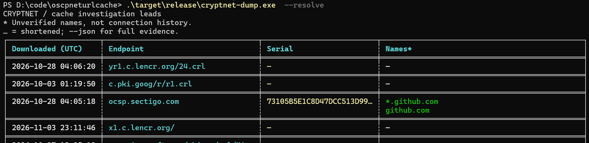

The malware is gone. Where did it call back?
Malware ran and made an HTTPS callback, but the executable is no longer available for analysis. Windows’ certificate cache may still offer leads to its potential destinations.
Without the sample, you cannot reverse-engineer its callback address. If its HTTPS activity triggered Windows certificate-validation downloads, CryptnetUrlCache may retain certificate IDs that help you recover candidate hostnames—even when browser history or a packet capture is unavailable. This is a way to investigate where it may have connected, not to reconstruct the full request URL or traffic.
Concise summary
HTTPS requests made through WinINet, and Windows code-signature validation, can use the Windows certificate-chain engine and Cryptnet retrieval/cache layer. When online certificate-revocation checks download OCSP responses or certificate revocation lists, Windows can cache the results. Cached OCSP requests and responses contain certificate serial numbers; searching Certificate Transparency data can turn those serials into candidate domain names. [1] [4]
What cryptnet-dump does
A standalone Rust executable reads live or collected cache files directly, without changing the source evidence. It extracts cached URLs, timestamps, content sizes and ETags, then decodes OCSP certificate IDs from request URLs and response bodies. It is offline by default; no Python or runtime installation is required on the target.
With --resolve, it searches ctlogs.dev, falling back to crt.sh, for candidate certificate common names and DNS Subject Alternative Names (SANs). Lookups are serial-only, not issuer-verified. Non-empty results are cached locally across runs without expiry.
Install from crates.io
Also available as the cryptnet-dump Rust crate. With stable Rust and a native build toolchain installed, run:
cargo install cryptnet-dump --locked
cryptnet-dump --helpCargo installs the cryptnet-dump command; this is a CLI crate, not a Rust library. Ensure Cargo’s binary directory is on your PATH. Windows builds need Rust MSVC and Visual Studio C++ Build Tools; Linux builds need a native C compiler/linker. Prebuilt release archives do not require Rust or build tools on the target.
Collect first. Resolve separately.
On the target, collect without making CT requests:
.\cryptnet-dump.exe --json --output evidence.jsonlOn an Internet-connected forensic machine, enrich the saved evidence:
.\cryptnet-dump.exe --input evidence.jsonl --resolve --json --output resolved.jsonlAlternatively, examine an acquired cache with --path D:\Evidence\CryptnetUrlCache. Use --all-users to scan discovered user and service profiles; protected caches need elevation. Keep both cache directories and preserve originals. JSON Lines retains full fields, source paths, issuer hashes and warnings; the terminal table deliberately abbreviates them.


Online enrichment discloses certificate serials to the lookup providers (and certificate IDs to ctlogs.dev for details). Assess that disclosure before resolving case data. Source cache files and complete URLs are not uploaded.
Does WinHTTP leave this artefact too?
Yes, it can—but not simply because an HTTPS request happened. The important event is a certificate-chain retrieval or online revocation check that needs downloadable material, not the choice of HTTP API alone.
| Caller | What matters for the cache |
|---|---|
| WinINet HTTPS | Windows certificate validation can cause Cryptnet retrievals. Revocation settings, policy and application error handling matter; do not assume one OCSP entry per request. WinINet exposes SECURITY_FLAG_IGNORE_REVOCATION to ignore revocation problems; this is not proof that no check or download occurred. [3] |
| WinHTTP HTTPS | Microsoft documents certificate-revocation checking as disabled by default. An application can enable it with WinHttpSetOption: WINHTTP_OPTION_ENABLE_FEATURE and WINHTTP_ENABLE_SSL_REVOCATION on a request handle. Enabled checks can reach the same Windows chain/cache mechanism. AIA issuer-certificate retrieval can also matter independently of OCSP. [2] [5] |
| Code validation | Authenticode / WinVerifyTrust may retrieve issuer certificates or revocation material, depending on the trust provider and flags. WTD_CACHE_ONLY_URL_RETRIEVAL prevents network retrieval for code-signature verification; WTD_REVOKE_NONE alone is not a general “no network” guarantee. Checking a file’s signature does not prove the file executed. [4] |
These are documented API semantics, not a claim that this project has experimentally tested every Windows version, policy or application. The HTTP API cannot be identified from an entry alone.
Would Edge or Chrome leave these artefacts?
Do not expect ordinary HTTPS browsing in current Edge or Chrome to populate this Windows cache through their main server-certificate verifier. Both now ship their own verifier rather than relying on the Windows chain engine for that job. They can still trust locally installed Windows roots; reading a Windows trust store is not the same as using Cryptnet for validation downloads. [10] [11]
Current Chrome and Edge on Windows
- Chrome: the Chrome Certificate Verifier became the Windows default in Chrome 108, after rollout began in 105. Chrome generally uses CRLSets rather than per-site online OCSP/CRL checks; enterprise policy can enable online checks. [10] [12]
- Edge: the browser-shipped verifier rolled out to unmanaged devices in versions 109–111 and became the default for all Windows devices in Edge 112. The Windows policy to revert to the system verifier was removed in 115. Microsoft documents online OCSP/CRL checks as disabled by default, with policies available to enable them or require checks for local trust anchors. [11] [14]
Crucially, online checking does not imply Cryptnet caching. Chromium’s certificate fetcher implements OCSP, CRL and AIA issuer-certificate downloads through its own network interfaces (CertNetFetcherURLLoader / SimpleURLLoader), not the Windows Cryptnet retrieval API. Enabling an online-check policy therefore does not, by itself, establish that these downloads enter CryptnetUrlCache. This source supports the Chromium implementation; it is not an exhaustive trace of every Edge-specific or Windows integration path. [13]
Older versions and other Windows operations
Historically, yes, browser validation could reach Cryptnet. Chromium’s older Windows verifier called CertGetCertificateChain and explicitly used the revocation provider in cryptnet.dll. Its behavior included cached revocation checks, optional online checks and an online retry for some Extended Validation (EV) certificates. Windows AIA chain building could also retrieve issuer certificates. Those older-version artefacts must not be generalized to today’s browser defaults. [15]
Nor does a modern browser make the cache “malware-only”: Windows components, signature checks, and other programs can independently populate it. A certificate ID matching a browser-accessible domain does not distinguish browsing from malware. Record the browser version and effective policies (on a live system, chrome://policy or edge://policy), and correlate browser history, downloads, EDR and network evidence before attribution.
This conclusion is based on vendor documentation and Chromium source, not a controlled before/after cache-write experiment for every browser build. Absence of Cryptnet evidence cannot rule out either browsing or an HTTPS callback.
How the cache works
Crypt32 builds and evaluates certificate chains. Cryptnet retrieves certificate-related objects and maintains the URL cache. This is not WinINet’s ordinary web-content cache: the stored endpoint is usually a CA’s validation service, not the HTTPS site that prompted the check.
With online revocation enabled, Microsoft documents this lookup order: [1]
- Use a time-valid stapled OCSP response supplied in the TLS handshake, if available.
- Look for a time-valid OCSP response or CRL in the user’s Cryptnet URL cache.
- Look for a time-valid CRL in a system certificate store, such as
HKLM\CA. - Try the certificate’s OCSP URL from its Authority Information Access (AIA) extension. Cache a successful download.
- Try the certificate’s CRL Distribution Point (CDP). Cache a successful CRL download.
Issuer certificates can also be retrieved through AIA while building a chain. Retrieval flags can force cache-only access or suppress storing a download with CRYPT_DONT_CACHE_RESULT. A successful retrieval is not equivalent to a successful overall trust decision. [6]
Where to collect
The tool’s default location is:
%USERPROFILE%\AppData\LocalLow\Microsoft\CryptnetUrlCache\Inside it, MetaData describes retrieved objects and Content holds their downloaded bytes. The tool pairs files by matching filenames; the filename is not the certificate serial number. Preserve filenames and directory relationships.
Check other user profiles and these service-profile roots too, appending AppData\LocalLow\Microsoft\CryptnetUrlCache:
%SystemRoot%\System32\config\systemprofile%SystemRoot%\SysWOW64\config\systemprofile%SystemRoot%\ServiceProfiles\LocalService%SystemRoot%\ServiceProfiles\NetworkService
The relevant cache belongs to the retrieval identity. A service’s activity need not appear in the interactive user’s profile. --all-users discovers common locations, not every possible relocated profile; use repeated --path arguments for acquired or unusual locations.
How long does an OCSP entry remain?
Expiry is not deletion. Windows normally keeps a non-prefetched OCSP entry until the later of its protocol expiry and last synchronization time, then adds a 28-day flush exemption. The entry becomes eligible for deletion during a later service scan; it does not disappear at that exact instant.
A seven-day OCSP response therefore has an ordinary physical window of about 35 days from retrieval, plus scan delay. When nextUpdate is absent, the default response-validity fallback is 12 hours, producing a window of about 28.5 days. Active prefetch, a long-lived response, disabled flushing, manual clearing, or profile cleanup can make the real window longer or shorter.
On-disk format: metadata and content
The current parser implements an observed Windows metadata layout: a 116-byte prefix followed by variable-length UTF-16LE strings. This is a reverse-engineered layout used by this tool, not a Microsoft-guaranteed on-disk ABI. The table describes fields the parser reads; other header bytes remain uninterpreted. [7]
| Offset (hex / decimal) | Size | Interpretation |
|---|---|---|
0x0C / 12 | 4 bytes | URL byte length, including UTF-16 NUL. |
0x10 / 16 | 8 bytes | Last download time, Windows FILETIME. |
0x58 / 88 | 8 bytes | Cached Last-Modified header time, FILETIME. |
0x64 / 100 | 4 bytes | ETag byte length, including UTF-16 NUL when present. |
0x70 / 112 | 4 bytes | Declared content size. |
0x74 / 116 | Variable | URL string, followed immediately by ETag string. |
Integers are little-endian. String lengths are bytes, not character counts; odd lengths, overruns, missing terminators and invalid UTF-16 are rejected. A zero-length ETag is accepted. FILETIME counts 100-nanosecond intervals since 1 January 1601 UTC; JSON output preserves that precision. An all-zero time converts to the epoch, not a meaningful 1601 validation event.
Content\<matching filename> contains the retrieved object bytes, such as a DER OCSP response, CRL or certificate. The tool decodes basic OCSP responses; it does not decode CRLs or other object types further. Missing content produces a warning without discarding usable metadata or OCSP IDs recoverable from the URL.
Inputs are bounded to 1 MiB per metadata file and 32 MiB per content file. Malformed metadata is reported. Unsupported or malformed OCSP content yields no response-derived IDs, so an empty OCSP list does not establish that an entry is unrelated to certificate validation.
From OCSP bytes to candidate names
GET: the request is in the URL
RFC 6960 defines an OCSP GET path as the responder URL plus a URL-encoded, base64-encoded DER OCSPRequest. Decode percent escapes, decode base64, then parse ASN.1 DER. Base64 can contain literal slashes; taking only the last path segment loses valid requests. The parser tries path suffixes and supports padded and unpadded base64. [8] [9]
POST: look inside the cached response
A POST request carries DER in its body, so the endpoint URL alone need not disclose a serial. The cached OCSPResponse can still contain a BasicOCSPResponse (OID 1.3.6.1.5.5.7.48.1.1), whose SingleResponse entries carry certificate IDs. The tool retains multiple IDs and deduplicates response IDs already recovered from the URL.
What a certificate ID actually identifies
An OCSP CertID contains the hash algorithm, hash of the issuer’s distinguished name, hash of the issuer’s public key, and target certificate serial. The serial is normalized to uppercase hexadecimal without leading zeroes. Serial numbers are unique within an issuer, not globally. Issuer hashes are preserved in JSON, but this tool’s CT searches do not verify them against candidate certificates.
CT indexes can return public certificates with matching serials; the tool collects common names and DNS SANs, sorts them and removes duplicates. Public TLS certificates are the useful case. Private PKI, code-signing certificates and incomplete indexing can yield no result. A certificate may also cover many unrelated hosts or a wildcard.
Interpretation & edge cases
- Cache time is not connection time.
- The download timestamp records cache activity, not the first or last website visit. Last-Modified describes the remote object’s metadata, not user activity. OCSP
producedAt,thisUpdateandnextUpdateare responder/status times, not visit times; the tool does not export them as activity timestamps. - Repeated connections may leave no new entry.
- Valid cached data, stapled OCSP, system-store CRLs, or session reuse can avoid a fresh download. WinHTTP also documents session-level certificate verification reuse. Cache retention is not a fixed forensic window: entries can be refreshed, removed or cleared. [1] [2]
- A download can happen without a new connection to the inferred site.
- CRL prefetching can refresh material in the background. Chain checks may concern intermediate CAs, code signers or timestamping chains. Utilities and explicit certificate checks can retrieve the same objects. The cache does not record the responsible process or original application URL. [1]
- CRL-only validation breaks the serial-to-domain shortcut.
- A CRL is a list of revoked certificates; its presence does not identify which certificate prompted the retrieval. Its listed serials must not be treated as a list of sites accessed. A CA offering only CRLs can still leave useful URL evidence but no OCSP target ID.
- No OCSP entry does not mean no HTTPS activity.
- Revocation may be disabled or cache-only; endpoints may be unavailable; a certificate may lack an OCSP URL; retrieval may suppress caching. Applications can use their own TLS/revocation implementation instead of the Windows chain engine. Modern browsers must not be assumed to behave like WinINet.
- TLS inspection can change what the certificate represents.
- An inspecting enterprise proxy may present a private-CA certificate instead of the origin’s public certificate. Public CT lookup can then be unhelpful or misleading. Correlate the issuer and chain before attributing a candidate name.
- These files are evidence, not a tamper-proof audit log.
- Profile ownership is context, not process attribution. Preserve source files and acquisition hashes; corroborate timestamps and names with independent records. Do not infer a successful TLS session, code execution or malicious intent from a cache entry alone.
Sources & further reading
API behavior below is grounded in Microsoft documentation and RFC 6960. Binary-layout and tool-specific statements come from this repository’s implementation and existing research.
- Microsoft: Crypt32 CRL semantics — lookup order, URL caching, CRL-only behavior and prefetching.
- Microsoft: WinHTTP security considerations — revocation opt-in and session reuse. Older protocol-default examples on that page are not used here.
- Microsoft: WinINet option flags — security and revocation-error handling.
- Microsoft: WINTRUST_DATA — code-signature policy, revocation and cache-only flags.
- Microsoft: WinHTTP option flags — enabling SSL revocation checks.
- Microsoft: CryptRetrieveObjectByUrlW — object retrieval and caching flags.
- Metadata parser — observed offsets, encodings and bounds checks.
- RFC 6960 — CertID, response semantics (§4.2), and GET/POST transport (Appendix A).
- OCSP parser — URL and response decoding, normalization and extraction limits.
- Chrome Root Store / Certificate Verifier FAQ — Windows rollout, local trust and revocation policies.
- Microsoft: Edge certificate-verification changes — browser-shipped verifier, rollout and removal of the Windows fallback policy.
- Chromium: CRLSets — default revocation approach and optional online checks.
- Chromium: certificate network fetcher — browser-network OCSP, CRL and AIA retrieval.
- Microsoft: enable online revocation checks and require online revocation checks for local anchors — optional soft-fail checks and required checks for locally installed CAs.
- Chromium 100: Windows certificate verifier — historical Windows chain-engine, Cryptnet and EV-retry behavior, not the modern default.
For operational details, see the technical documentation, resolver implementation and original Python research.